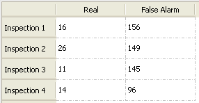

Viewing the Results in Tables
You can view
analysis results as a table in the Results Viewing Area.
Procedure
- Click the Table View radio button in
the Results Viewing Area to display the results as a graph.Figure 1. Table View

Results
A sample result in table view for Defect Count > Real Vs False Alarms on 4 inspections is shown in Figure 2.
Figure 2. Results for Defect Count
(Real Vs False Alarms) in Table View
